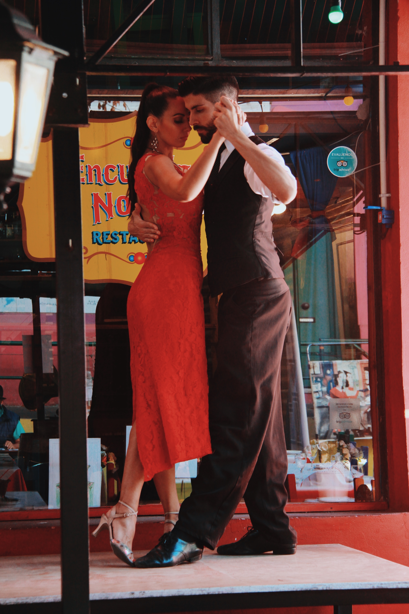
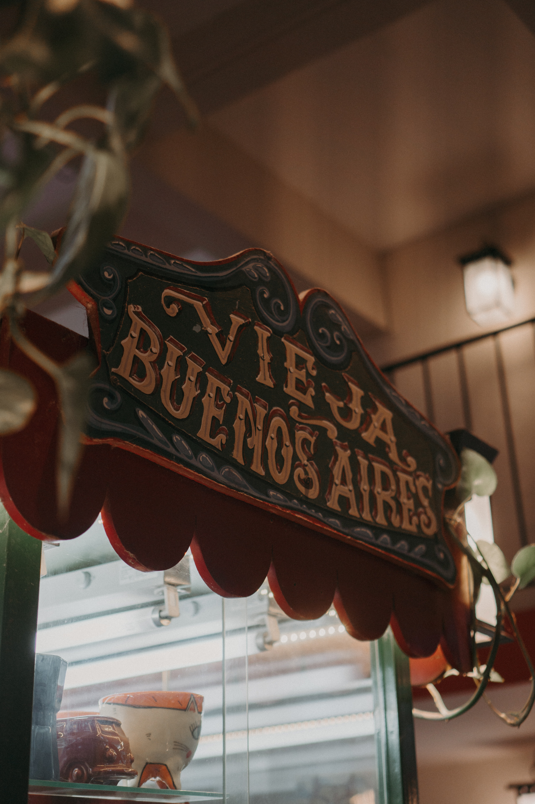
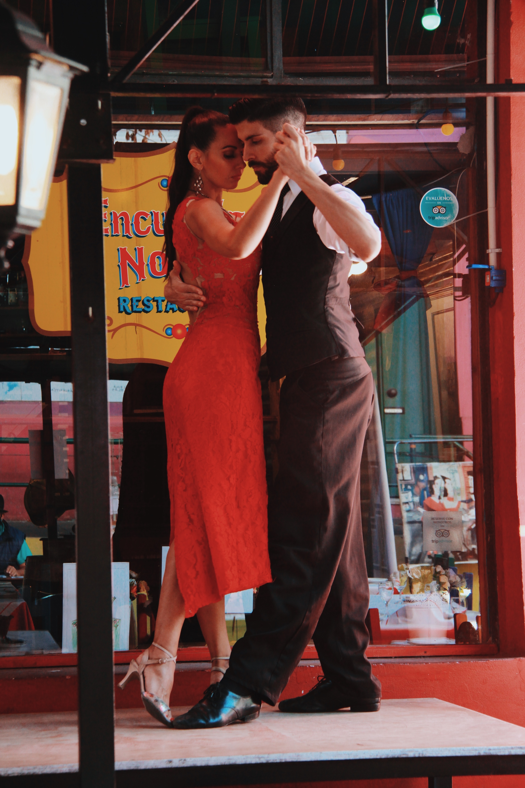
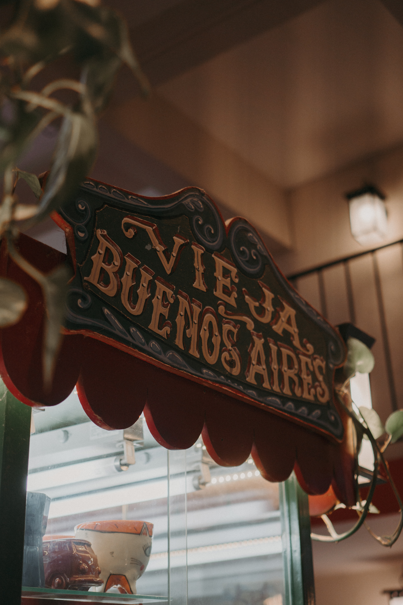

Why Buenos Aires?
Buenos Aires, the Cosmopolitan City
Buenos Aires is a pulsating, passionate, cosmopolitan city. The combination of rich architectural and cultural heritage, modern creative energy, electric nightlife, unique traditions, a vibrant arts scene, extensive parks, and warm, friendly hosts makes it one of the world’s most exciting capitals. There are dozens of reasons to visit, hence why the city has repeatedly been voted the best in Latin America by users of TripAdvisor, but here are just ten of the big ones.
Sensual, nostalgic, and fiendishly difficult to learn, tango emerged in the city's portside neighbourhoods in the mid-19th century and has since conquered the world. Today, Buenos Aires is a place of pilgrimage for tango dancers from all over, and the dance is still very much alive - danced by the young and young-at-heart well into the early hours every night of the week. As well as witnessing traditional social dancing and learning some steps at a milonga, you can treat yourself to sumptuous dinner-shows with spectacularly choreographed performances, and see live orchestras playing everywhere from cosy neighbourhood bars to grand symphony halls.
 


